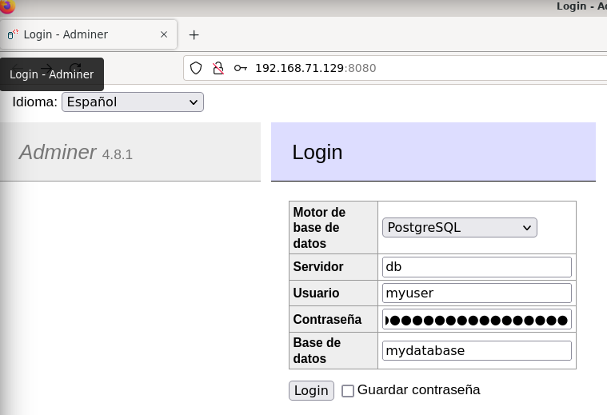
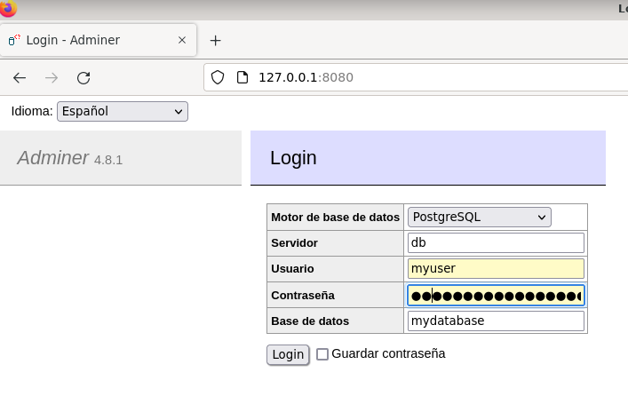
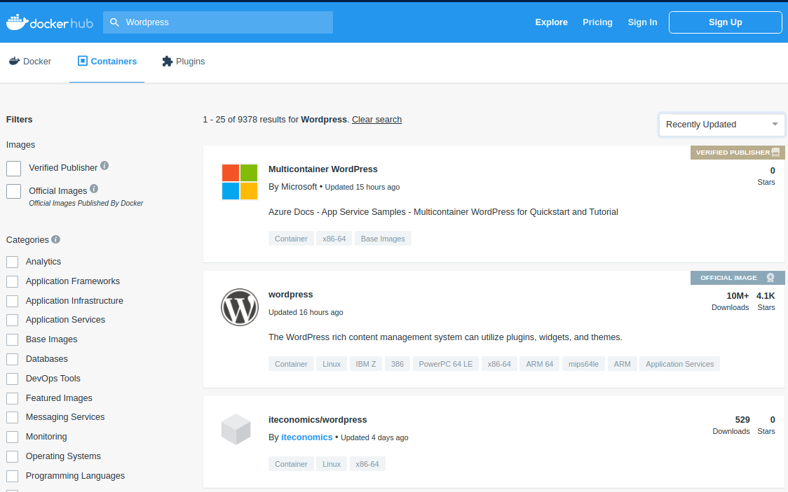
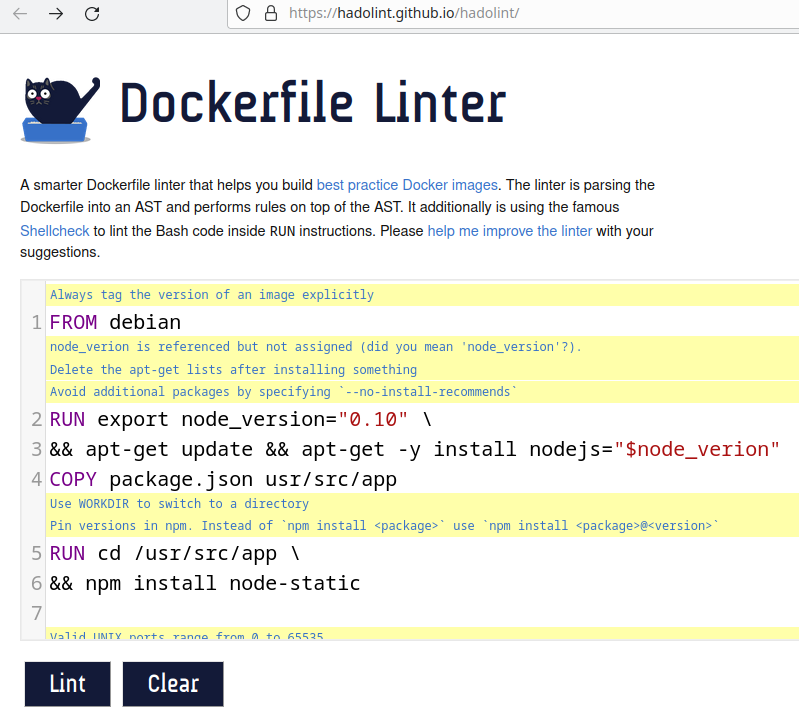

Seguridad en Docker 01¶
1. Docker Secret¶
Imagine un despliegue con una base de datos postgres y adminer (herramienta de gestión de bases de datos de código abierto, gratuita y basada en PHP). Necesita indicar el usuario, clave y base de datos al servidor postgres. La primera solución (no recomendable en un entorno de producción) es introducir esos valores en el fichero compose-postgres.v0.yml:
version: '3.1'
services:
db:
image: postgres
container_name: postgres-container
environment:
POSTGRES_USER: pps
POSTGRES_PASSWORD: ppspassword
POSTGRES_DB: ppsDB
adminer:
image: adminer
ports:
- 8080:8080
Hacerlo de esta forma tiene el inconveniente de hacer visible esa información sensible. Para gestionar este tipo de información en el despliegue se puede usar docker secret.
https://docs.docker.com/engine/swarm/secrets a secret is a blob of data, such as a password, SSH private key, SSL certificate, or another piece of data that should not be transmitted over a network or stored unencrypted in a Dockerfile or in your application’s source code. You can use Docker secrets to centrally manage this data and securely transmit it to only those containers that need access to it. Secrets are encrypted during transit and at rest in a Docker swarm. A given secret is only accessible to those services which have been granted explicit access to it, and only while those service tasks are running.
Se puede crear un secreto de dos formas:
- Usando el comando
docker secret createpara crear primero el secreto y luego usarlo en el despliegue. - A partir de un secreto almacenado en fichero y crear de forma automática el secreto en el momento del despliegue.
Debe tener en cuenta un detalle: docker secret es un servicio que se debe ejecutar en un cluster, luego debe iniciar primero un cluster (en este caso de un nodo) con docker swarm init. El uso de docker swarm se incluye en otra práctica.
$ docker swarm init
....
$
1.1. Primer ejemplo: secretos generado por comando¶
En el despliegue de postgres y adminer primero se crean con el comando docker secret create tres secretos de nombres pg_user, pg_password y pg_database:
$ echo "pps" | docker secret create pg_user -
nqfkihla5j5n4z1d72via08rq
$ echo "ppspassword" | docker secret create pg_password -
p02zpc0uqjm01b1lyfb76gvdv
$ echo "ppsDB" | docker secret create pg_database -
o6o15f0e6vo4da0er7wq7j9j1
$
Puede listar los secretos creado con el comando docker secret ls:
$ docker secret ls
ID NAME DRIVER CREATED UPDATED
o6...j1 pg_database 28 s ago 28 s ago
p0...dv pg_password 39 s ago 39 s ago
nq...rq pg_user 9 s ago 49 s ago
d$
Una vez creados los secretos se modifica el fichero compose que los utilice. Los secretos por defecto se montan en el directorio /run/secrets del contenedor. Por eso las variables de entorno del servicio db en el siguiente fichero compose se asocian a los ficheros /run/secrets/pg_user, etc. En el bloque de secrets del fichero compose se indica su procedencia externa.
En este caso el fichero compose-postgres.v1.yml será similar a este:
services:
db:
image: postgres
restart: always
environment:
POSTGRES_USER_FILE: /run/secrets/pg_user
POSTGRES_PASSWORD_FILE: /run/secrets/pg_password
POSTGRES_DB_FILE: /run/secrets/pg_database
secrets:
- pg_password
- pg_user
- pg_database
....
# tienen que estar creados previamente
secrets:
pg_user:
external: true
pg_password:
external: true
pg_database:
external: true
En un cluster la forma de desplegar es con el comando docker stack deploy, indicando el nombre del fichero con la opción -c file y el nombre del stack en este caso demo:
$ docker stack deploy -c compose_postgres.v1.yml -d demo
Creating network demo_default
Creating service demo_db
Creating service demo_adminer
$
Y ahora puede acceder al gestor adminer:


Para terminar hay que eliminar el despliegue del stack (docker stack rm <stack>) y desactivar el cluster (docker swarm leave):
$ docker stack rm demo
Removing service demo_adminer
Removing service demo_db
Removing network demo_default
$ docker swarm leave --force
Node left the swarm.
$
1.2. Segundo ejemplo: secretos en fichero¶
En este ejemplo se despliega el CMS wordpress que utiliza una base de datos mysql. En este caso los secretos se utilizan en los dos servicios del despliegue, y se van a almacenar en ficheros externos al contenedor. A estos ficheros docker accede en el momento del despliegue para leer su contenido y crear de forma automática los secretos.
Primero se crean los ficheros con la información sensible. Se usa openssl para crear las claves (si desea modificar la longitud de la clave modifique el último valor de openssl) y se redirige la salida a un fichero. El usuario y la base de datos no se han considerado información sensible en este ejemplo.
Se crean dos ficheros:uno para la clave de root mysql y otro para la clave del usuario en mysql/wordpress.
$ openssl rand -base64 30 > db_root_password.txt
$ openssl rand -base64 30 > db_user_password.txt
$ cat dd_*.txt
i8Z+9B78TV4j12IeeCVfIWi7j+JLvGIi1aq/fLsp
/J9+qoBVHtFvvKi85LA+EcAAVu5NoVFf1b2Uyp5c
$
Ya se ha comentado que los secretos están disponibles para los servicios en el directorio /run/secrets del contenedor. Lo que cambia en este segundo ejemplo es el apartado final donde se indica para cada secreto el fichero que le corresponde. Tenga en cuenta que los valores del usuario (pps) y su clave (/run/secrets/db_password) deben coincidir en los dos servicios. El fichero compose_wordpress.yml queda:
services:
db:
image: mysql:latest
volumes:
- db_data:/var/lib/mysql
environment:
MYSQL_ROOT_PASSWORD_FILE: /run/secrets/db_root_password
MYSQL_DATABASE: ppsDB
MYSQL_USER: pps
MYSQL_PASSWORD_FILE: /run/secrets/db_user_password
secrets:
- db_root_password
- db_user_password
wordpress:
depends_on:
- db
image: wordpress:latest
volumes:
- wordpress_data:/var/www/html
ports:
- "8000:80"
environment:
WORDPRESS_DB_HOST: db
WORDPRESS_DB_NAME: ppsDB # si no se define creo toma el valor wordpress
WORDPRESS_DB_USER: pps
WORDPRESS_DB_PASSWORD_FILE: /run/secrets/db_user_password
secrets:
- db_user_password
secrets:
db_user_password:
file: db_user_password.txt
db_root_password:
file: db_root_password.txt
volumes:
db_data:
wordpress_data:
Recuerde que en este caso no se crean los secretos antes del despliegue (no se usa docker secret create), sino que se generan de forma automática en el momento del despliegue. Esto se puede observar en la salida del comando docker stack deploy:
$ docker stack deploy -c compose_wordpress.yml -d demo
Creating network demo_default
Creating secret demo_db_root_password
Creating secret demo_db_user_password
Creating service demo_db
Creating service demo_wordpress
$
Puede comprobar los secretos creados:
$ docker secret ls
ID NAME DRIVER CREATED UPDATED
39...l7 demo_db_root_password 9 m. ago 9 m. ago
kk...zz demo_db_user_password 9 m. ago 9 m. ago
$
O el estado de los servicios del stack:
$ docker stack ls
NAME SERVICES
demo 2
$ docker stack services demo
ID NAME MODE REPLICAS IMAGE PORTS
24hyojjstv53 demo_db replicated 1/1 mysql:latest
x10j8zw84xkw demo_wordpress replicated 1/1 wordpress:latest *:8000->80/tcp
usuario@d12-base-01:~/CIBER-PPS/bloque_05_docker/t01-docker-tutorial-101/src_TODO
$
Y ahora compruebe si wordpress está funcionando de forma conjunta con el servidor mysql. Para ello acceda al puerto 8000 de localhost (o a la IP de su equipo) y se debe mostrar la página inicial de configuración del CMS wordpress:

Puede hacer pruebas, añadir páginas o artículos, etc.
Para borrar el despliegue docker stack rm <nombre_deploy>
$ docker stack rm demo
Removing service demo_db
Removing service demo_wordpress
Removing secret demo_db_root_password
Removing secret demo_db_user_password
Removing network demo_default
$
Y para borrar el cluster docker swarm leave. Tenga en cuenta que en ese caso se eliminan los secretos.
docker config¶
Si la información que utiliza no es "sensible" es posible usar
docker configen vez dedocker secrets. En el despliegue previo se podría haber usado para almacenar el usuario y base de datos.Tiene un ejemplo en este enlace: Use Swarm Managed Configs
2. Seguridad en las imágenes¶
2.1. Fuentes fiables¶
En general solo debemos ejecutar contenedores que provengan de fuentes fiables. Y si es posible construirlo partir de un fichero Dockerfile lo que permite auditar la imagen.
Por ejemplo, si accede a http://hub.docker.com y busca contenedores WordPress salen varias opciones. Puede filtrarlas por valoraciones, descargas, última modificación, etc. ysSiempre que sea posible debe optar por imágenes Verified Publisher y Official Image .
En esta figura tiene dos imágenes, una oficial de Docker y otra de una fuente verificada (Microsoft).

Además se han añadido ahora las imágenes DHI.
2.2. Docker Hardened Images¶
El servicio de Docker Hardened Images (DHI) es una iniciativa de Docker Inc. para proporcionar imágenes de contenedor extremadamente seguras, optimizadas y listas para producción.
El objetivo principal de estas imágenes es reducir la superficie de ataque de las aplicaciones (hasta en un 95% según Docker). Estas son sus características clave:
- Casi cero vulnerabilidades (CVEs): Están diseñadas para tener el mínimo posible de vulnerabilidades conocidas. Docker las parchea continuamente de forma automatizada.
- Minimalismo extremo: Se basan en un enfoque "distroless" o muy reducido (usando bases como Alpine o Debian), eliminando herramientas innecesarias como gestores de paquetes o shells que un atacante podría explotar.
- Transparencia Total (SBOM): Cada imagen incluye un Software Bill of Materials (SBOM) detallado, que es como una lista de ingredientes que permite saber exactamente qué librerías y versiones contiene la imagen.
- Cumplimiento y Procedencia: Cuentan con niveles de SLSA (Supply-chain Levels for Software Artifacts) Nivel 3, lo que garantiza que la imagen no ha sido alterada desde su creación hasta que llega a ti.
- Sustitución directa (Drop-in): Están diseñadas para reemplazar las imágenes base estándar (como
python,node,go) sin necesidad de cambiar drásticamente tuDockerfile.
Docker ha hecho que el catálogo principal de Hardened Images sea gratuito y de código abierto. Puede usarla en proyectos personales o profesionales sin pagar una suscripción, siempre que no necesite características empresariales avanzadas.
Un ejemplo de cómo cambiaría el código sería:
Versión original
# Antes (Imagen estándar)
FROM node:20
WORKDIR /app
COPY . .
CMD ["node", "index.js"]
Versión "DHI"
# Usando la versión endurecida y verificada
FROM dhi.io/docker/node:20
WORKDIR /app
COPY . .
CMD ["node", "index.js"]
Para empezar a usarlas generalmente debes autenticarte** en el registro específico de Docker para estas imágenes** (
docker login dhi.io).
Existen versiones comerciales para organizaciones con necesidades críticas:
- Ofrecen SLAs de parcheo (parches para vulnerabilidades críticas en menos de 7 días o incluso 24 horas).
- Permiten añadir certificados internos o paquetes específicos manteniendo la certificación de "hardened".
- Acceso a variantes con certificaciones FIPS (estándar federal de procesamiento de información) o STIG, necesarias en entornos gubernamentales o financieros muy regulados.
- Soporte de seguridad para imágenes incluso después de que la versión original (upstream) haya llegado a su fin de vida.
2.3. Imágenes DCT: Docker Content Trust¶
Se puede asociar un hash a cada imagen Docker creada para verificar que es correcta y no se ha modificado. Esta verificación está desactivada por defecto.
Para activarla se configura una variable de entorno, DOCKER_CONTENT_TRUST con el valor 1. Una vez activada cualquier descarga de una imagen implicará la comprobación del hash.
Observe en la siguiente ejecución como la descarga de una imagen sin firma (raghudok/dct-test:unsigned) no es posible si previamente ha activado DCT.
# se activa DCT
$ export DOCKER_CONTENT_TRUST=1
# Se intenta descargar una imagen sin firmar
$ docker pull raghudok/dct-test:unsigned
No valid trust data for unsigned
$
Si posteriormente la desactiva si es posible la descarga:
# ahora se desactiva
$ export DOCKER_CONTENT_TRUST=0
# Se intenta descargar imagen sin firmar
$ docker pull raghudok/dct-test:unsigned
unsigned: Pulling from raghudok/dct-test
0669b0daf1fb: Pull complete
Digest: sha256:e8d2db0f9cc124273e5f3bbbd2006bf2f3629953983df859e3aa8092134fa373
Status: Downloaded newer image for raghudok/dct-test:unsigned
docker.io/raghudok/dct-test:unsigned
$
Pruebe ahora la misma secuencia con una imagen firmada (raghudok/dct-test:signed):
# se activa DCT
$ export DOCKER_CONTENT_TRUST=1
# Se intenta descargar ahora una imagen con firma
$ docker run raghudok/dct-test:signed
Unable to find image 'raghudok/dct-test:signed' locally
docker.io/raghudok/dct-test@sha256:e8d2db0f9cc124273e5f3bbbd2006bf2f3629953983df859e3aa8092134fa373: Pulling from raghudok/dct-test
0669b0daf1fb: Pull complete
Digest: sha256:e8d2db0f9cc124273e5f3bbbd2006bf2f3629953983df859e3aa8092134fa373
Status: Downloaded newer image for raghudok/dct-test@sha256:e8d2db0f9cc124273e5f3bbbd2006bf2f3629953983df859e3aa8092134fa373
Tagging raghudok/dct-test@sha256:e8d2db0f9cc124273e5f3bbbd2006bf2f3629953983df859e3aa8092134fa373 as raghudok/dct-test:signed
Hello this is busybox!
$
Tiene una explicación completa del proceso de firma y verificación en el enlace Docker content trust 101. También tiene el proceso disponible en uno de los videos del curso de Docker disponible en la plataforma.
3. Dockerfile¶
3.1. CMD y ENTRYPOINT¶
Lo primero sería aclararse con el uso de CMD y ENTRYPOINT, y como se aplican al lanzar un contenedor. Para ello lo más recomendable es seguir este artículo donde lo explica paso a paso con un ejemplo: Docker CMD vs. Entrypoint Commands o este en castellano: Docker: Diferencia entre ENTRYPOINT y CMD.
3.2. COPY o ADD¶
Otro aspecto a revisar es el uso de COPY o ADD. Otro articulo con un paso a paso explicando su uso y sus diferencias: Docker ADD vs. COPY: What are the Differences?
Resumen : usar COPY siempre que sea posible.
Docker’s official documentation notes that COPY should always be the go-to instruction as it is more transparent than ADD.
The Docker team also strongly discourages using
ADDto download and copy a package from a URL. Instead, it’s safer and more efficient to use wget or curl within aRUNcommand. By doing so, you avoid creating an additional image layer and save space.Conclusion: To sum up – use COPY. As Docker itself suggests, avoid the ADD command unless you need to extract a local tar file.
3.3. Multistage¶
El objetivo es reducir el tamaño de la imagen final realizando todos los pasos previos de compilación, dependencias, etc. en una imagen intermedia. En la imagen final sólo se incorpora el resultado de la fase previa. Para demostrarlo en este ejemplo se usa un pequeño programa en Go y un par de ficheros Dockerfile. Los detalles están en este artículo: Multi-stage builds con Docker.
Este sería el programa en Go:
package main
import "fmt"
func main() {
fmt.Println("Hello world from Go!")
}
Y esta la versión incial del Dockerfile (sin multistage):
FROM golang:1.14.2-alpine
WORKDIR /src
COPY src .
RUN go build -o /out/helloworld .
ENTRYPOINT ["/out/helloworld"]
Si construye la imagen helloworld:inicial:
$ docker images
REPOSITORY TAG IMAGE ID CREATED SIZE
$ docker build -t helloworld:inicial .
Sending build context to Docker daemon 5.632kB
Step 1/4 : FROM golang:1.14.2-alpine
...
Successfully built c640743c9c29
Successfully tagged helloworld:inicial
$ docker images
REPOSITORY TAG IMAGE ID CREATED SIZE
helloworld inicial c640743c9c29 3 seconds ago 372MB
golang 1.14.2-alpine dda4232b2bd5 12 months ago 370MB
$ docker run helloworld:inicial
Hello world from Go!
$
puede observar que la imagen helloword:inicial ocupa 372M, 2M más de la imagen usada para construirla golang.
En la siguiente versión del Dockerfile se compila la aplicación en una imagen intermedia etiquetada como builder (AS builder) y a continuación se copia el resultado de la compilación desde la imagen intermedia (COPY --from=builder ) en una imagen alpine que ocupa mucho menos:
FROM golang:1.14.2-alpine AS builder
WORKDIR /src
COPY src .
RUN go build -o /out/helloworld .
FROM alpine:3.12 AS bin
COPY --from=builder /out/helloworld /
CMD ["/helloworld"]
Si a partir de este nuevo Dockerfile se construye una imagen con etiqueta helloworld:final:
$ docker build -t helloworld:final .
Sending build context to Docker daemon 5.632kB
Step 1/7 : FROM golang:1.14.2-alpine AS builder
...
Step 6/7 : COPY --from=builder /out/helloworld /
---> 33bca22b3635
Step 7/7 : ENTRYPOINT ["/helloworld"]
---> Running in 450fea70f761
Removing intermediate container 450fea70f761
---> 52eef99e40f2
Successfully built 52eef99e40f2
Successfully tagged helloworld:final
Se puede comprobar que la imagen helloworld:final apenas ocupa menos espacio, y además tiene una menor superficie de ataque.
$ docker images
REPOSITORY TAG IMAGE ID CREATED SIZE
helloworld final 52eef99e40f2 15 seconds ago 2.07MB
helloworld inicial c640743c9c29 6 minutes ago 372MB
golang 1.14.2-alpine dda4232b2bd5 12 months ago 370MB
$
Puede comprobar que el nuevo contenedor tiene la misma uncionalidad:
docker run helloworld:final
3.4. Cuidado con el uso de la etiqueta :latest¶
Existe cierta confusión sobre el uso de la etiqueta latest: no se debe suponer que corresponde a la última versión de una imagen. De hecho se asocia al último build de una imagen en el que no se especifique una etiqueta. Tiene una explicación detallada en el enlace The misunderstood Docker tag: latest.
Por lo tanto, la recomendación es indicar siempre una imagen específica, por ejemplo FROM ubuntu:20.04
3.5. Combinar comandos RUN¶
Es recomendable reducir las capas de docker combinando comandos RUN:
RUN apt-get update
RUN apt-get install -y nginx
Mejor:
RUN apt-get update && \
apt-get install -y nginx
3.6. Linting¶
Existen herramientas para detectar fallos o posibles mejoras en un fichero Dockerfile. Una de ellas es hadolint: https://github.com/hadolint/hadolint
Puede instalarla y ejecutarla en su equipo, probarla online o usar un contenedor que incluya hadolint para verificar sus ficheros. Observe esta última opción para comprobar el fichero dockerfile-test-hadolint:
$ docker run --rm -i hadolint/hadolint < dockerfile-test-hadolint
-:1 DL3006 warning: Always tag the version of an image explicitly
-:2 DL3015 info: Avoid additional packages by specifying `--no-install-recommends`
-:2 DL3009 info: Delete the apt-get lists after installing something
-:2 SC2154 warning: node_verion is referenced but not assigned (did you mean 'node_version'?).
-:4 DL3045 warning: `COPY` to a relative destination without `WORKDIR` set.
-:5 DL3003 warning: Use WORKDIR to switch to a directory
-:5 DL3016 warning: Pin versions in npm. Instead of `npm install <package>` use `npm install <package>@<version>`
-:8 DL3011 error: Valid UNIX ports range from 0 to 65535
$
También puede probarla online: https://hadolint.github.io/hadolint/. En la figura puede observar el resultado de hacer un lint a un fichero Dockerfile en la web. Cada uno de los mensajes del linter (en amarillo) es un enlace a una descripción mas detallada:

4. Escaneo de seguridad de las imágenes¶
Se deben comprobar las posibles vulnerabilidades de una imagen al construirla, y también al ejecutarla: entre ambos momentos pueden aparecer nuevas vulnerabilidades.
DockerHub incluye un servicio de escaneos de imágenes (docker scout). Hay otras posibilidades: Anchore, Aqua Security (Trivy), JFfog Xray, etc. Puede encontrar más información en este enlace: Container Security Scanners to find Vulnerabilities
4.1. Trivy¶
En este caso se prueba Trivy https://github.com/aquasecurity/trivy de la empresa Aqua Security. Puede detectar vulnerabilidades en los paquetes del Sistema Operativo o en las dependencias de las aplicaciones. Puede escanear contenedores, pero también repositorios git o sistemas de ficheros. Lo podemos instalar en nuestro sistema operativo, o ejecutarlo desde un contenedor Docker. Muestra las vulnerabilidades encontradas, dónde esta localizada, su CVE, versión del paquete que la corrige y enlaces a más información sobre la vulnerabilidad.
Para instalarlo debe acceder a las releases de trivy en https://github.com/aquasecurity/trivy/releases y seleccionar la que corresponda a su sistema (en debian la más actual en este momento es trivy_0.60.0_Linux-64bit.deb).
Al ejecutarse comprueba si tiene que actualizar su base de datos interna y luego comienza la exploración. Vea un ejemplo analizando la imagen alpine:
usuario@d12-base-01:~/Descargas$ trivy -q i alpine
Report Summary
┌────────────────────────┬────────┬─────────────────┬─────────┐
│ Target │ Type │ Vulnerabilities │ Secrets │
├────────────────────────┼────────┼─────────────────┼─────────┤
│ alpine (alpine 3.21.3) │ alpine │ 0 │ - │
└────────────────────────┴────────┴─────────────────┴─────────┘
Legend:
- '-': Not scanned
- '0': Clean (no security findings detected)
usuario@d12-base-01:~/Descargas$
En cambio con otras imágenes con muchas vulnerabilidades la salida se hace complicada de gestionar y es mejor redirigir a un fichero:
usuario@d12-base-01:~/Descargas$ trivy -q i debian -o rest.txt
usuario@d12-base-01:~/Descargas$ more rest.txt
Report Summary
┌──────────────────────┬────────┬─────────────────┬─────────┐
│ Target │ Type │ Vulnerabilities │ Secrets │
├──────────────────────┼────────┼─────────────────┼─────────┤
│ debian (debian 12.9) │ debian │ 76 │ - │
└──────────────────────┴────────┴─────────────────┴─────────┘
Legend:
- '-': Not scanned
- '0': Clean (no security findings detected)
debian (debian 12.9)
====================
Total: 76 (UNKNOWN: 0, LOW: 57, MEDIUM: 17, HIGH: 1, CRITICAL: 1)
┌────────────────────┬─────────────────────┬──────────┬──────────────┬───────────────────────┬───────────────┬──────────────────────────────────────────────────────────────┐
│ Library │ Vulnerability │ Severity │ Status │ Installed Version │ Fixed Version │ Title │
├────────────────────┼─────────────────────┼──────────┼──────────────┼───────────────────────┼───────────────┼──────────────────────────────────────────────────────────────┤
│ apt │ CVE-2011-3374 │ LOW │ affected │ 2.6.1 │ │ It was found that apt-key in apt, all versions, do not │
│ │ │ │ │ │ │ correctly... │
│ │ │ │ │ │ │ https://avd.aquasec.com/nvd/cve-2011-3374 │
├────────────────────┼─────────────────────┤ │ ├───────────────────────┼───────────────┼──────────────────────────────────────────────────────────────┤
│ bash │ TEMP-0841856-B18BAF │ │ │ 5.2.15-2+b7 │ │ [Privilege escalation possible to other user than root]
...
4.2. Docker scout¶
En el tutorial de docker se mostraba la herramienta docker scan qeu ha sido sustituida por Docker Scout
Docker Scout es una herramienta de análisis de seguridad que te permite examinar tus imágenes de contenedor en busca de vulnerabilidades (CVEs). A diferencia de los escaneos tradicionales, Scout ofrece recomendaciones en tiempo real sobre cómo corregir esas vulnerabilidades, sugiriendo, por ejemplo, versiones más seguras de la imagen base.
- Vulnerabilidades (CVE): El sistema identifica "Common Vulnerabilities and Exposures". Scout las clasifica en Critical, High, Medium y Low.
- Análisis de capas: Scout analiza cada capa de tu
Dockerfile. Si una vulnerabilidad viene de la imagen base (ej.node:14), Scout te dirá: "Si actualizas anode:20-bookworm, eliminarás 50 vulnerabilidades".
Para usar Docker Scout:
- Instalación del plugin: Docker Scout funciona como una extensión de la CLI de Docker.
- Autenticación: Iniciar sesión en Docker Hub.
- Análisis de imagen: Utilizar comandos para ver un resumen rápido y un desglose detallado de vulnerabilidades.
- Interpretación de recomendaciones: Ver cómo Docker Scout nos sugiere mejorar el Dockerfile.
4.2.1. Instalar¶
https://docs.docker.com/scout/install/
Descargar e instalar el plugin de Docker Scout
curl -fsSL https://raw.githubusercontent.com/docker/scout-cli/main/install.sh -o install-scout.sh
sh install-scout.sh
4.2.2. Iniciar sesión¶
Docker Scout necesita consultar una base de datos de vulnerabilidades actualizada. Para ello, debes estar autenticado:
docker login
4.2.3. Comandos principales de análisis¶
Una vez instalado, aquí tienes los comandos fundamentales :
| Comando | Propósito |
|---|---|
docker scout quickview [IMAGEN] |
Da un resumen rápido de las vulnerabilidades y la calidad de la imagen base. |
docker scout cves [IMAGEN] |
Muestra un listado detallado de todas las vulnerabilidades encontradas. |
docker scout recommendations [IMAGEN] |
Sugiere cambios en la imagen base para reducir el número de vulnerabilidades. |
4.2.4. Ejemplo práctico¶
Suponga que tiene una imagen llamada mi-app-debian:latest. Para ver qué problemas tiene, ejecutar:
# Ver el estado general de seguridad
$ docker scout quickview mi-app-debian:latest
# Ver detalles específicos de cada fallo de seguridad
$ docker scout cves mi-app-debian:latest